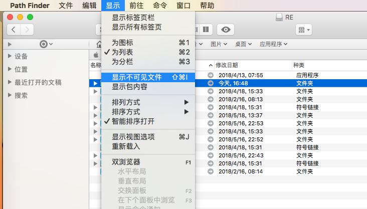

FireWolf OS X PE 9 使用手册
扉页
第一章 简述
第二章 准备阶段
恢复镜像
引导启动
第三章 开始使用
启动器一览
工具栏功能与应用程序
主界面功能与应用程序
火箭启动器简介与使用
应用程序的管理与导入
导入应用程序（初阶）
导入应用程序（进阶）
导出应用程序与其他
第四章 系统维护
第五章 常见操作
挂载 EFI 系统分区
使用 Path Finder 删除文件
使用 Path Finder 访问隐藏文件
创建原版 macOS 安装盘
FireWolf OS X PE 9 下载中心
下载页面
本書使用 GitBook 釋出
使用 Path Finder 访问隐藏文件
使用 Path Finder 访问隐藏文件
单击菜单上的『显示』，选择『显示所隐藏文件』即可。

results matching "
"
No results matching "
"